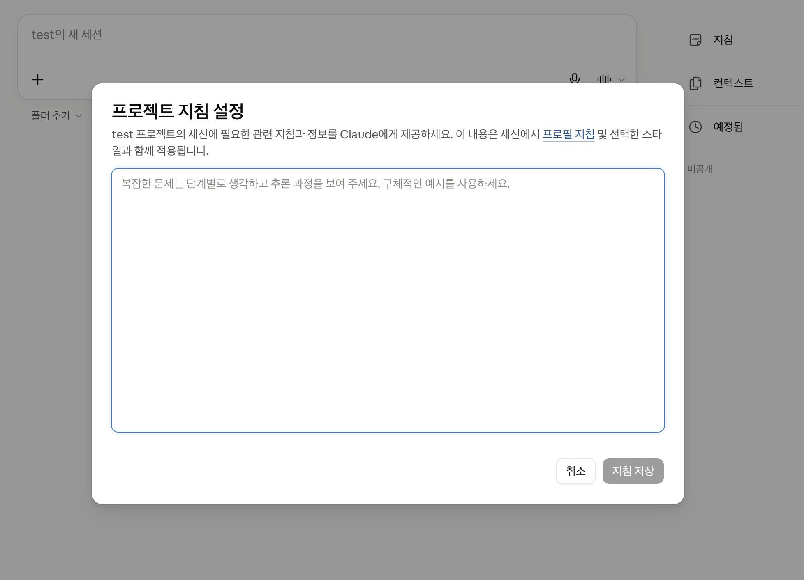
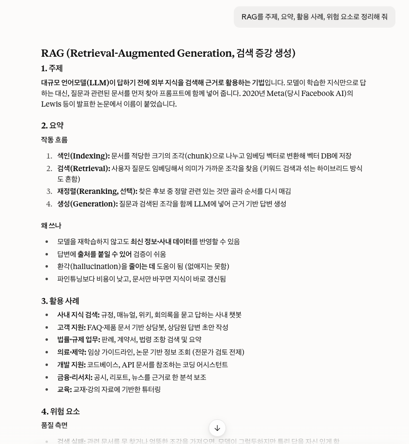
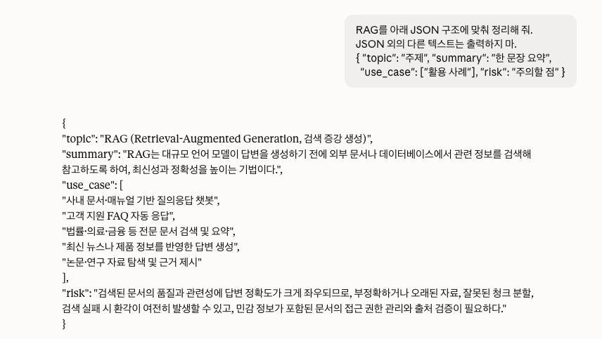

AI 리터러시 & 프롬프트 엔지니어링 / RAG / LLMOps
AI 리터러시
–AI를 이해하고, 한계를 알고 비판적으로 판단하며, 목적에 맞게 활용하는 능력
프롬프트 엔지니어링
–원하는 결과를 얻기 위해 AI에게 주는 입력을 설계하고, 테스트하고, 개선하는 일
AI를 이해하는 것에서 시작해, AI에게 올바르게 지시하는 방법
Large Language Model
방대한 데이터와
거대한 규모
사람의 언어를
다룸
다음 단어를
예측하는 모델
방대한 글을 학습해, 사람의 언어를 이해하고 만들어 내는 AI
비 오는 날 점심 메뉴 추천해 줘
AI비 오는 날엔 비 오는 날엔48% 오늘은22% 점심으로14% 따뜻한 따뜻한64% 매콤한18% 시원한5% 국물 요리 국물 요리58% 칼국수24% 커피6% 어때요? 어때요?67% 추천해요21% 좋아요8%
다음 단어를 하나씩 예측해서 문장을 만든다
외운 게 아니라 패턴을 익혔다 →처음 보는 질문에도 답한다
※ 확률은 이해를 돕기 위한 예시입니다
점심 메뉴 추천해 줘
+비 오는 날
+국물 있는 걸로
+한식 면 요리로
12741개
구체적일수록 →답의 범위는 좁아지고, 결과는 의도에 가까워진다
프롬프트 엔지니어링 = 이 원리로 원하는 결과를 얻도록 지시를 설계하는 일
Hallucination
사실이 아니라 확률로
고른다 → 그럴듯한 거짓
Knowledge Cutoff
학습이 끝난 이후는
모른다
※ 웹 검색으로 상당 부분 보완
Bias
데이터가 치우치면
답도 치우친다
한계를 알아야 →AI의 답을 비판적으로 판단할 수 있다
LLM은 앞의 문맥을 보고 다음 단어를 고른다
↓ 처음에 AI가 보는 문맥은 프롬프트
프롬프트가 바뀌면 답이 바뀐다
→ 구체적일수록 의도에 가까워진다
↓ 하지만
환각 · 지식 컷오프 · 편향이 있다
↓ 그래서
이해하고, 비판적으로 판단하고, 잘 지시해야 한다
= AI 리터러시 & 프롬프트 엔지니어링
Zero-shot
Few-shot
Chain of Thought
shot = 예시 하나
제로샷 0개
원샷 1개
퓨샷 몇 개
용어의 배경
고양이 하나를 알아보려면 사진 수만 장을 학습
→ 이미 아는 걸 활용해 1장, 0장으로 배울 수 없을까?
('말'을 아는 AI에게 "줄무늬 있는 말" → 얼룩말)
GPT-3: 방대한 글로 이미 수많은 패턴을 익힘
→ 다시 학습하지 않고, 예시 몇 개만 보고 새로운 일을 해냄
제로샷
다음 리뷰를 배송 불만, 품질 불만, 칭찬 중
하나로 분류해 줘.
포장도 꼼꼼하고 디자인도 사진이랑 똑같이 예뻐요. 선물용으로 딱이에요. 다만 뚜껑이 조금 뻑뻑해요.
AI ▸칭찬
퓨샷
팀 기준: 불만이 하나라도 있으면 → 불만
다음 예시를 참고해 리뷰를 분류해 줘.
포장도 꼼꼼하고 디자인도 사진이랑 똑같이 예뻐요. 선물용으로 딱이에요. 다만 뚜껑이 조금 뻑뻑해요. →
AI ▸품질 불만
팀만 아는 기준은, 예시로 보여 줘야 한다
암산
5x − 28 = 2x + 2
x = ? 😵💫
단계적으로 생각하면
① 5x − 2x = 2 + 28
② 3x = 30
③ x = 10 ✓
바로 답하지 말고, 단계를 나눠 생각하게 한다
용어의 배경
예시에 풀이 과정까지 넣었더니 → 추론 문제 정확도가 크게 향상
"단계별로 생각해 보자" 한 줄만 넣어도 → 비슷한 효과
일반 질문
로그인 후 가끔 장바구니가 비어 보여.
원인이 뭐야?
AI
캐시 문제일 가능성이 높아요.
브라우저 캐시를 지워 보세요.
CoT 적용
로그인 후 가끔 장바구니가 비어 보여.
① 가능한 원인을 먼저 나열하고
② 각각이 '가끔'이라는 증상과 맞는지 하나씩 따져 본 다음
③ 가장 가능성 높은 원인을 골라 줘
AI
① 원인 후보: 캐시 · 세션 만료 · 로그인과 장바구니 불러오기 순서
② '가끔'과 맞는지
③ 결론: 로그인 처리와 장바구니 불러오기 순서가 어긋남
생각하는 순서를 정해 주면, 원인을 좁혀 간다
※ 최근 추론 모델은 스스로 생각하지만, 판단 순서를 직접 정하고 싶을 때는 여전히 유효
작업이 복잡해질수록 →
지시만
상식으로 판단할 수 있는 일
+ 예시
팀만의 기준이 있거나
출력 형식을 맞춰야 하는 일
+ 생각하는 순서
여러 단계의 판단이
필요한 일
최신 모델도 우리 팀의 기준과 형식은 모른다 →퓨샷 · CoT로 전달
매번 전달하는 규칙을 고정해 두려면? ▶시스템 프롬프트
AI = 지식은 많지만, 우리 팀 규칙은 모르는 신입 직원
당신은 기술 문서를 요약하는 어시스턴트입니다.
항상 핵심 개념, 활용 예시, 주의사항으로 나누어 설명하세요.
↓ 모든 대화에 적용
RAG가 무엇인지 설명해 줘
매번 바뀜LLMOps는 뭐야?
매번 바뀜한 번 설정 → 이후 모든 대화에 계속 적용
관점과 말투가 달라진다
이유를 알면 비슷한 상황에도 같은 판단
"하지 마"보다 "이렇게 해"
완성본을 직접 보여 준다
모호하면 질문, 되돌리기 어려우면 확인
당신은 이커머스 고객 리뷰를 분류하는 CS 담당자입니다.
</role>분류 결과는 고객 대응 우선순위를 정하는 데 사용됩니다.
따라서 칭찬이 섞여 있어도 불만이 하나라도 있으면 불만으로 분류하세요.
배송 불만, 품질 불만, 칭찬 중 하나의 라벨만 출력하세요.
리뷰만으로 판단하기 어려우면 "확인 필요"를 출력하세요.
디자인은 마음에 드는데 배송이 열흘 걸렸어요 → 배송 불만
포장도 꼼꼼하고 제품도 마음에 들어요 → 칭찬
프롬프트가 길어지면, <태그>나 # 제목(마크다운)으로 구역을 나눈다
채팅 도구
프로젝트 지침
코딩 도구
CLAUDE.md · rules 파일
서비스 개발
system 값
위치는 달라도, 역할은 같다

여기에
시스템 프롬프트를 입력
이 프로젝트의
모든 대화에 적용된다
client.messages.create(
model="...",
max_tokens=1024,
system="당신은 이커머스 고객 리뷰를 분류하는 CS 담당자입니다. ...",개발자가 미리 정해 둠 messages=[{"role": "user", "content": "리뷰: 배송은 빨랐는데 사이즈가 생각보다 작아요."}]사용자는 질문만 입력)
시스템 프롬프트는 사용자에게 보이지 않는다
시스템 프롬프트: "하나의 라벨만 출력하세요"
품질 불만✓ 처리품질 불만입니다.✕ 처리 실패**품질 불만**✕ 처리 실패분류: 품질 불만✕ 처리 실패사람은 알아보지만, 프로그램은 한 글자만 달라도 문제
형식을 확실하게 지키게 하려면? ▶구조화 출력
AI 답변을 서비스 화면에 바로 보여준다면?
{
"topic": "RAG",
"summary": "외부 문서를 검색해
LLM 답변 품질을 높이는 구조",
"use_case": ["사내 문서 검색", "정책 Q&A"],
"risk": "검색 품질이 낮으면 잘못된 답변 가능"
}
JSON = 키 : 값 쌍으로 된 데이터 형식
서비스 화면
RAG
외부 문서를 검색해 LLM 답변 품질을 높이는 구조
⚠ 검색 품질이 낮으면 잘못된 답변 가능
구조화 출력 = AI 답변을 미리 정한 구조(JSON)로 받는 방식
의도한 구조
{
"topic": "RAG",
"summary": "외부 문서를…",
"use_case": [
"사내 문서 검색",
"정책 Q&A"
],
"risk": "검색 품질이…"
}
키 이름이 바뀌면
{
"주제": "RAG",
"요약": "외부 문서를…",
"사용케이스": [
"사내 문서 검색",
"정책 Q&A"
],
"위험": "검색 품질이…"
}
데이터 형태가 바뀌면
{
"topic": "RAG",
"summary": "외부 문서를…",
"use_case_1": "사내 문서 검색",
"use_case_2": "정책 Q&A",
"risk": "검색 품질이…"
}
data["topic"]
→
값을 찾지 못함
→
화면이 비거나 오류
프롬프트에 구조 명시
퓨샷과 같은 원리
RAG를 정리해 줘.
아래 구조의 JSON만 출력해.
{ "topic": "주제", "summary": "한 문장 요약",
"use_case": ["활용 사례"], "risk": "주의할 점" }
결과
✓ 매번 같은 키를 가진 JSON
topic · summary · use_case · risk
구조를 명시하면, AI가 그 구조에 맞춰 답한다
구조 미지정

→ 제목·문장·목록이 섞인 자유 형식
구조 지정

→ 정한 키 그대로 JSON
프롬프트만으로도 대부분 지키지만, 보장은 아니다
거의 항상 맞지만, 가끔 예외가 생긴다
정한 구조가 맞는지 확인
틀리면 다시 요청
그래도 안 되면 대체 응답
구조는 프롬프트로 정하고, 코드로 한 번 더 검증한다